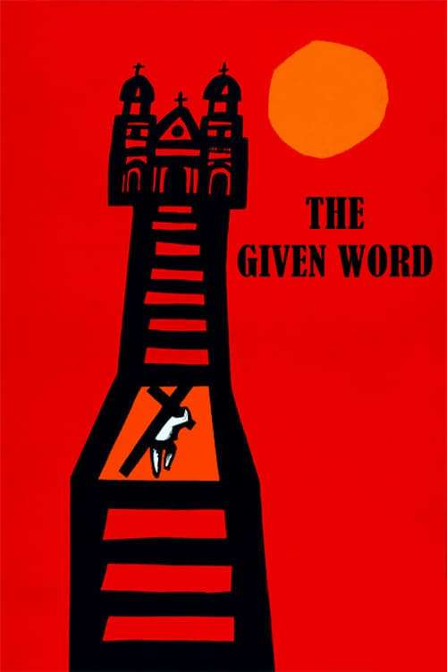
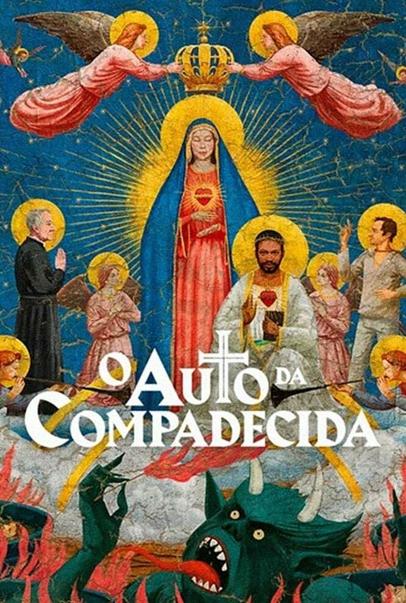

Top 5 Filmes Nacionais Favoritos
Esta página apresenta meus filmes nacionais favoritos, com imagens, trailers e sinopses detalhadas. Explore a lista e descubra mais sobre cada título.
1. Cidade de Deus

Sinopse e trailer
Buscapé (Alexandre Rodrigues) cresce na favela Cidade de Deus, sonhando em ser fotógrafo, enquanto enfrenta a violência das gangues lideradas por Zé Pequeno e Mané Galinha.
2. O Pagador de Promessas
Sinopse e trailer
O filme conta a história de um homem que faz uma promessa a Deus para salvar sua esposa, mas enfrenta diversos obstáculos em sua jornada.
3. O auto da compadecida
Sinopse e trailer
O filme é uma comédia dramática que conta a história de dois nordestinos, João Grilo e Chicó, que tentam sobreviver em um mundo cheio de injustiças e desigualdades.
4. Carandiru
Sinopse e trailer
O filme retrata a vida dos detentos na Casa de Detenção de São Paulo, abordando temas como violência, corrupção e a luta pela sobrevivência.
5. Tropa de Elite
Sinopse e trailer
O filme aborda a corrupção policial e a violência nas favelas do Rio de Janeiro, seguindo a trajetória de um capitão do BOPE.
📊 Comparativo dos filmes
| Título | Ano | Diretor | Gênero |
|---|---|---|---|
| Cidade de Deus | 2002 | Fernando Meirelles | Drama |
| O pagador de promessas | 1962 | Joaquim Pedro de Andrade | Drama |
| O auto da compadecida | 2000 | Guel Arraes | Comédia/Drama |
| Carandiru | 2003 | Fernando Meirelles | Drama |
| Tropa de Elite | 2007 | José Padilha | Ação/Drama |